VVD
Кухня Vincent Van Duysen для Molteni&C.
VVD
Кухня Vincent Van Duysen для Molteni&C.
Дизайн: Vincent Van Duysen
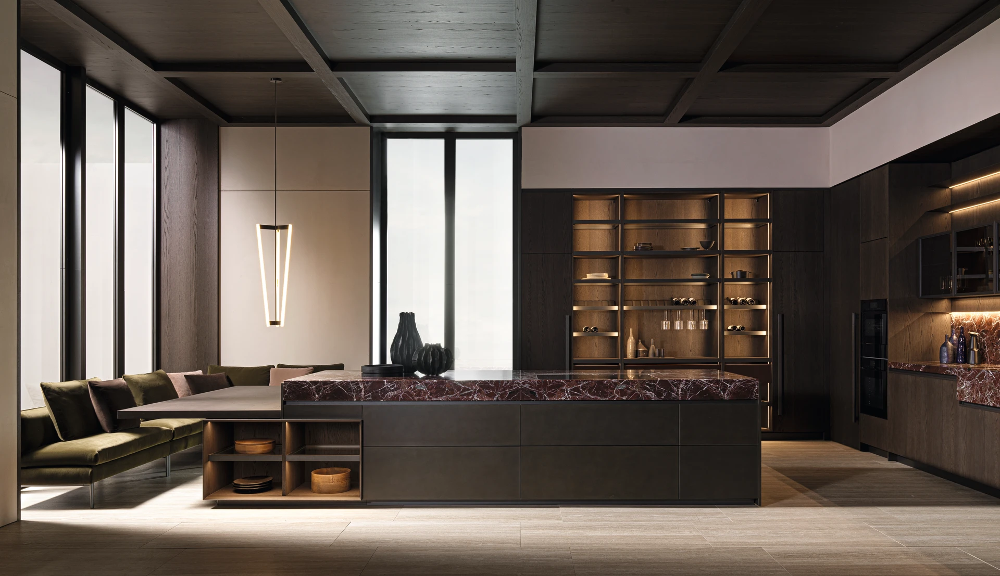
VVD, подписная кухня Vincent Van Duysen, воплощает баланс функциональной точности и сдержанной элегантности. Известная своими деталями, VVD получила усовершенствования, которые усиливают её скульптурное присутствие, сохраняя современный, вневременной характер. Каждый элемент продуман так, чтобы подчеркнуть мастерство исполнения и тактильность материалов.
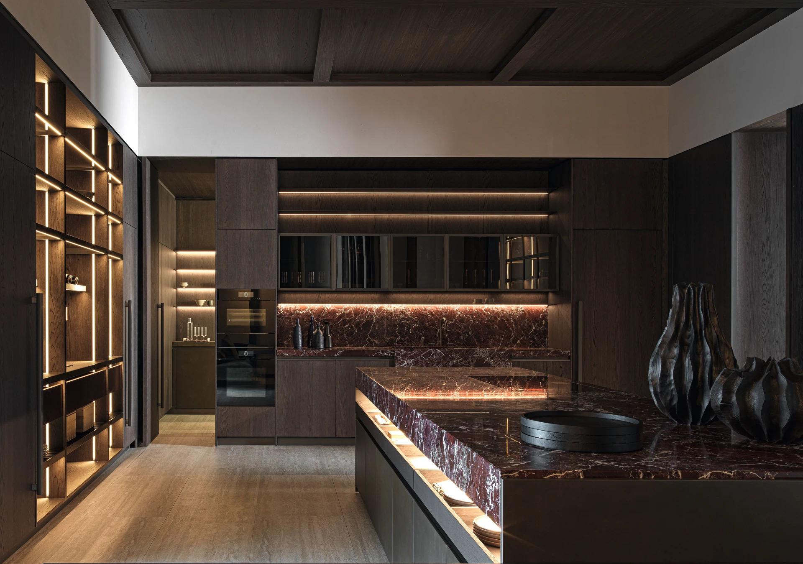
Каждая деталь VVD — от поверхностей до конструкции — отражает приверженность Van Duysen строгой проработке и мастерству: от точности столярной работы до гармонии пропорций, создавая кухню одновременно практичную, спокойную и визуально выразительную.
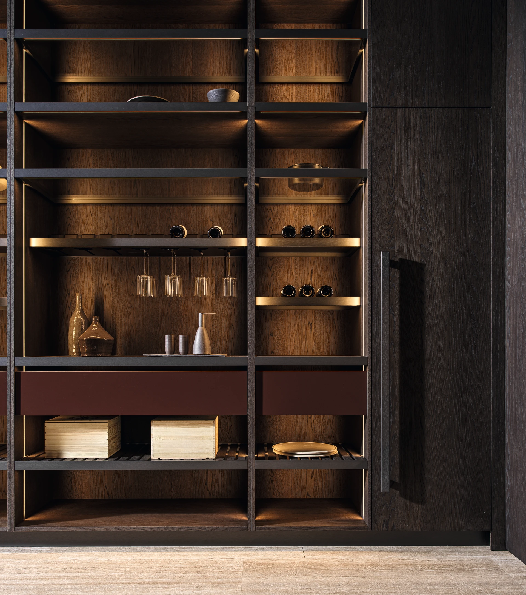
Усовершенствованные элементы VVD позволяют адаптировать её под разные интерьерные стили и уклады жизни, предлагая гибкость без потери целостности. Благородные материалы и продуманная деталировка превращают повседневную кулинарную рутину в моменты утончённой жизни (источник: molteni.it).
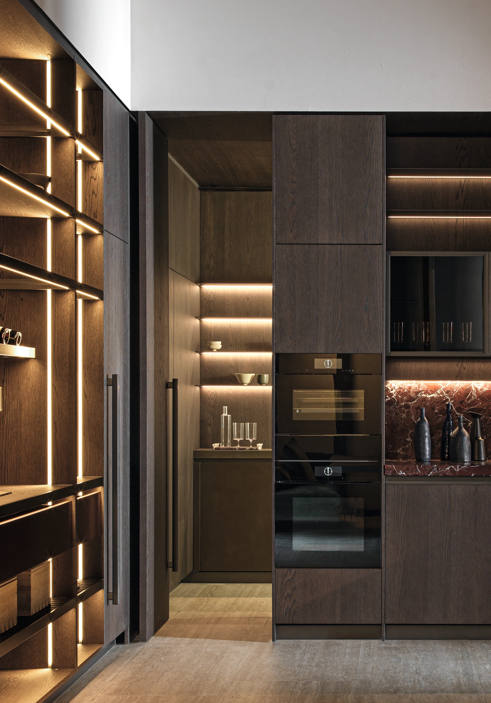
- Материалы: олово (pewter), орех, зелёный порфир
- Скульптурные, рельефные фасады с усиленной детализацией
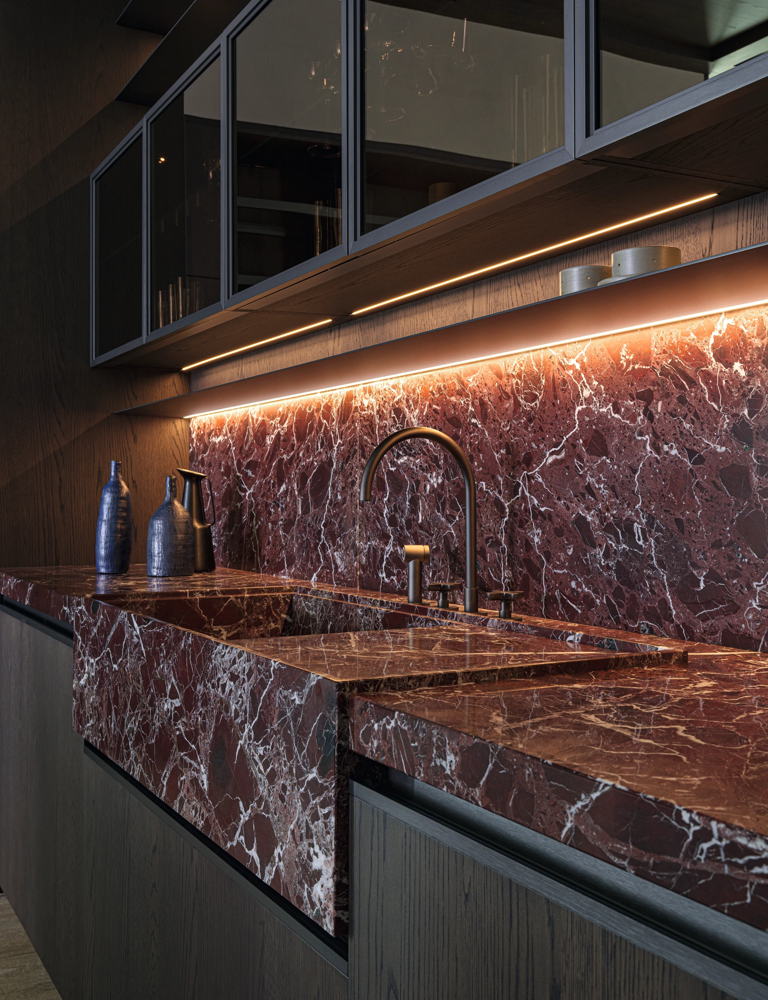
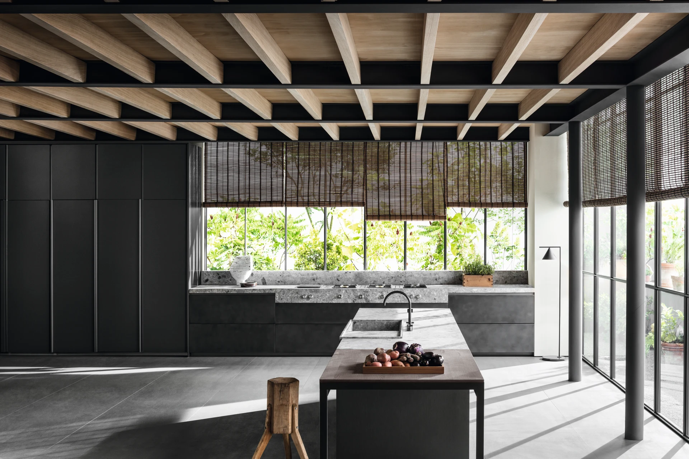
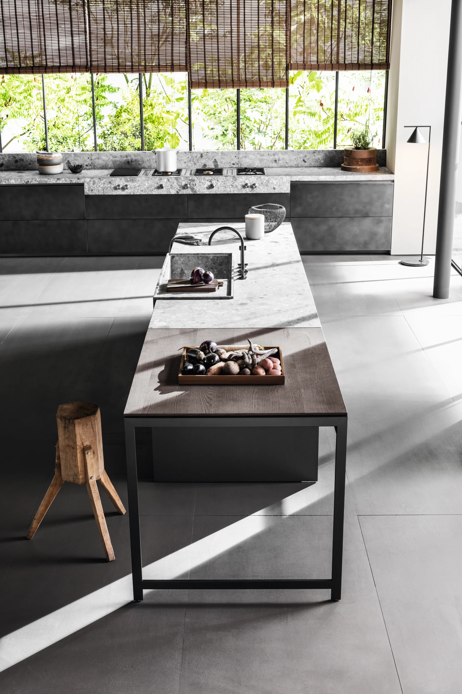
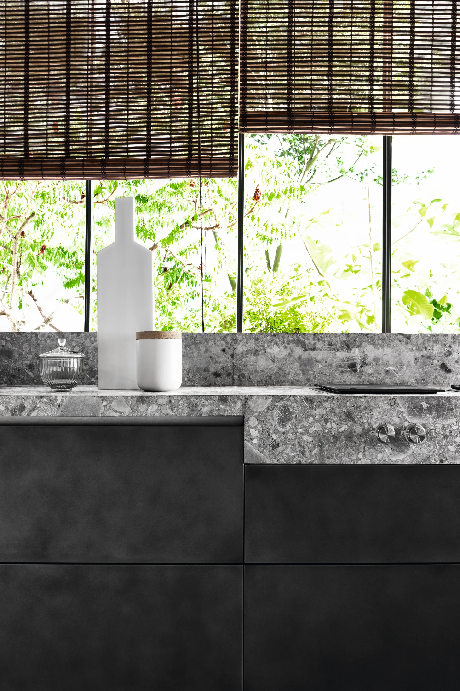
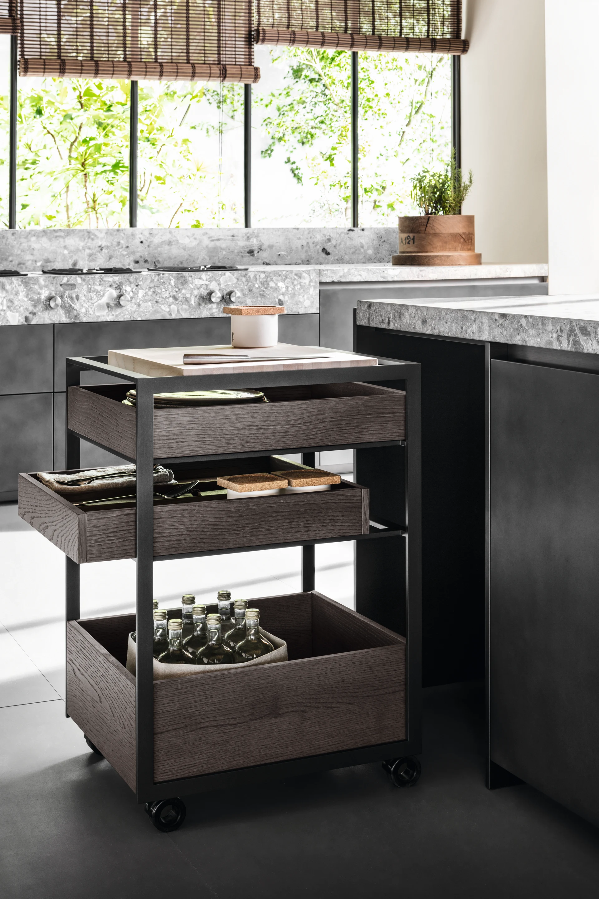
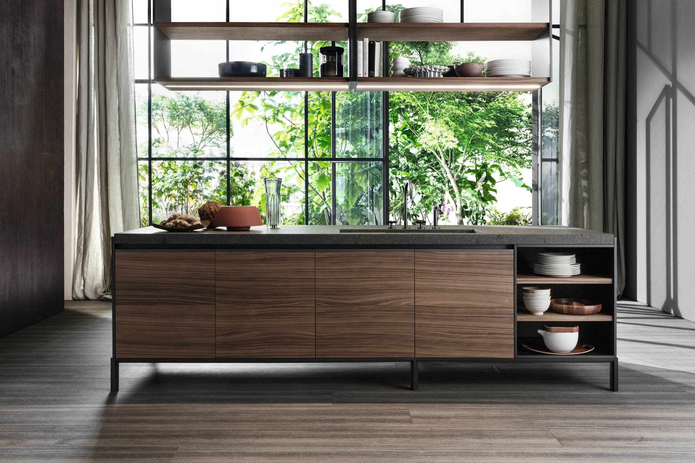
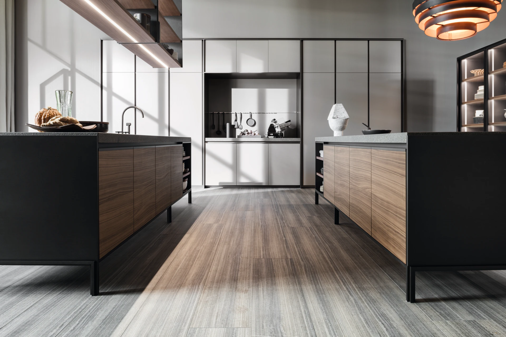
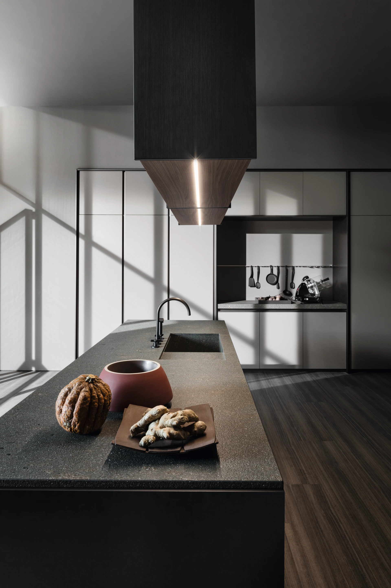
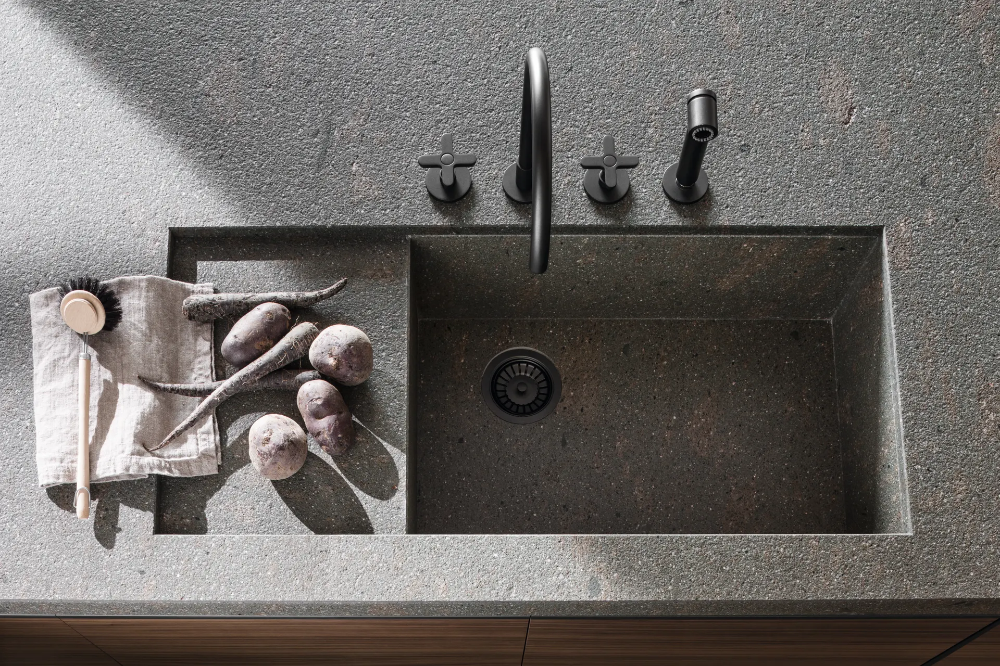
Vincent Van Duysen
Бельгийский архитектор, креативный директор Molteni&C с 2016 года. Известен строгим, почти монашеским минимализмом и вниманием к материалам в их естественном, необработанном выражении.
Обсудить проект
из коллекции VVD
Персональная консультация по конфигурации и материалам.